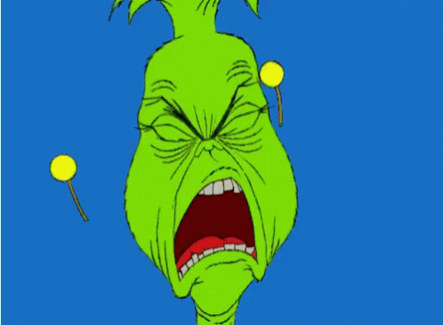
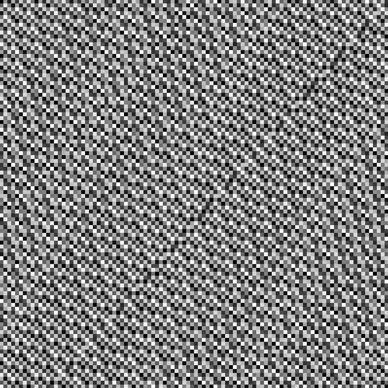
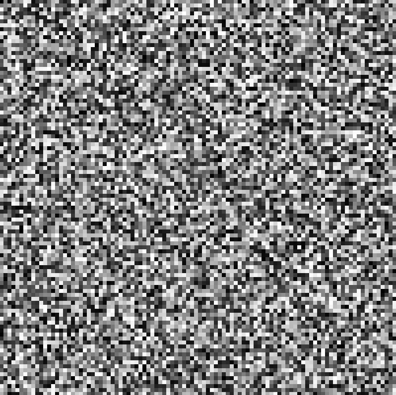
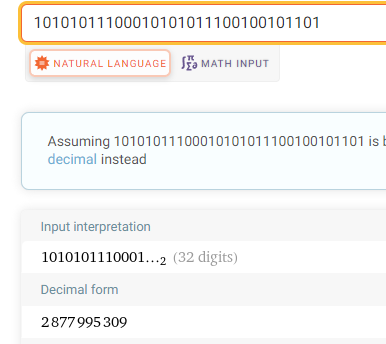
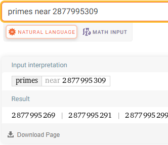
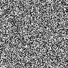

You can't generate random terrain without a random number generator!
We're going to need a way to generate noise based on a given XY coordinate pair. A traditional random number generator will not suffice for generating random terrain. This is because we need to be able to generate an arbitrary piece of voxel terrain without knowing anything about the surrounding terrain. In other words, our random number generator will not be sequential; we will be able to supply it any XY pair at any time to receive the random number associated with it.
Before we can implement any form of smooth noise ideal for terrain generation, we'll need to find a way to implement value noise, which looks like completely unstructured TV static. Imagine an image where each pixel is a random shade between black and white.
We're looking for a function that can generate a pseudorandom integer from two other integers, which will generate the same output every time for a given input. Does this property remind you of anything? If you're thinking of a hash function, you're on the right track! Hash functions don't have to be random, but they can be. Maybe something like this:
int hash(int x, int y) {
// Return some combination of x and y?
}If you know how to do this already, go ahead and design the function yourself! I had to spend a bit of time thinking of techniques because I'm slow.
We want to take advantage of something called the avalanche effect, where small changes to the input integers lead to a vastly different output. An easy way to observe pseudorandomness is by multiplying numbers repeatedly. Let's inspect the middle digits of the number 7100, for example. The middle 20 digits are: 16810857203198904625. On the other hand, the middle 20 digits of 7101 are: 17676000422392332377. Almost every digit is different between these two integers. Pretty random looking (and avalanche effect-y)! What we find is that repeated multiplication involves carrying digits several times over in a very unpredictable way (unless you're multiplying by the same base of course). We can make good use of this concept!
In our example, while powers of 7 do exhibit randomness in their base 10 digits, there are some limitations. As it turns out, not every possible combination of the first N digits can occur. What I mean by this is that all powers of 7 end in either 07, 49, 43, or 01. The pseudorandomness is less convincing for the least significant digits because they cycle more often. Our random number generator will take advantage of the most significant digits for this reason.
A noise function like this doesn't really need to be part of an instantiable class, but we can make it part of a singleton to stay organized. Let's create a class outline in Noise.h:
#ifndef NOISE_H
#define NOISE_H
#include <cstdint>
class Noise {
public:
static int hashInt(int x);
static int hashInt2(int x, int y);
private:
};
#endifIt will be helpful later to have a random number generator for a single integer too, so we have both hashInt() and hashInt2().
In Noise.cpp, the first thing I want to do is convert the input integers to unsigned integers so that there's no confusion about the sign bit (we will be doing some bitwise operations). Let's start with hashInt():
int Noise::hashInt(int x) {
const uint32_t ux = static_cast<uint32_t>(x);
}Let's try something simple. We take the integer, multiply it by some other integer, and then combine the upper 16 bits with the lower 16 bits using a bitwise XOR:
int Noise::hashInt(int x) {
const uint32_t ux = static_cast<uint32_t>(x);
uint32_t hash = ux;
hash *= 84623;
hash ^= hash >> 16;
return static_cast<int>(hash);
}If we use this to generate a grayscale image pixel-by-pixel, we get this:
Uhh... not very random. We can do better! Let's try adding another pass:
int Noise::hashInt(int x) {
const uint32_t ux = static_cast<uint32_t>(x);
uint32_t hash = ux;
hash *= 84623;
hash ^= hash >> 16;
hash *= 84623;
hash ^= hash >> 16;
return static_cast<int>(hash);
}Using this function to generate an image pixel-by-pixel produces this:
Much better! Where did 84623 come from though? Nowhere, I just wanted a random large number to multiply by and scramble bits around. Truly this number should be even larger (take up all 4 bytes of the integer) to guarantee maximum bit scrambling. The number we use should be large, have a uniform bit distribution, and not be a multiple of 2. If the number has one or more factors of 2, it will simply shift the input integer to the left and we'll lose information. Hash functions often use a prime number for this purpose too, so we might as well do that.
Here's how I came up with a random prime number. Step one is to type out 32 bits randomly into Wolfram Alpha to get some uniform bit distribution, and Wolfram Alpha will automatically convert this to base 10:
Next, we can just copy the decimal form of this binary number and find all the primes nearby:
Now we can just choose the first prime in the list! I've converted that number to hex for compactness and inserted it into the program like so:
constexpr uint32_t PRIME = 0xab8ab905;
int Noise::hashInt(int x) {
const uint32_t ux = static_cast<uint32_t>(x);
uint32_t hash = ux;
hash *= PRIME;
hash ^= hash >> 16;
hash *= PRIME;
hash ^= hash >> 16;
hash &= 0x7fffffff;
return static_cast<int>(hash);
}We also remove the sign bit before converting the hash back into a regular integer using the operation &= 0x7fffffff. And it's still working as expected:
In the definition of hashInt2(), we can use the same prime number to combine a second integer into the hash:
int Noise::hashInt2(int x, int y) {
const uint32_t ux = static_cast<uint32_t>(x);
const uint32_t uy = static_cast<uint32_t>(y);
uint32_t hash = ux * PRIME + uy;
hash *= PRIME;
hash ^= hash >> 16;
hash *= PRIME;
hash ^= hash >> 16;
hash &= 0x7fffffff;
return static_cast<int>(hash);
}Isn't that exciting? It's so easy to introduce randomness into your program! Tell me if you know of an even easier way. But the point is, when it comes to terrain generation, we will be able to generate random numbers for any block given just their coordinates! And we know it is entirely deterministic and will give us the same result for the same coordinate pair every time.
Click 'Next' to learn about Perlin noise: the most convenient method for generating smooth noise ever!